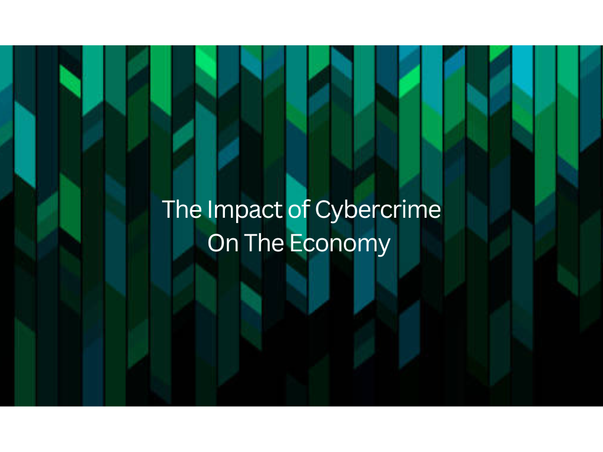
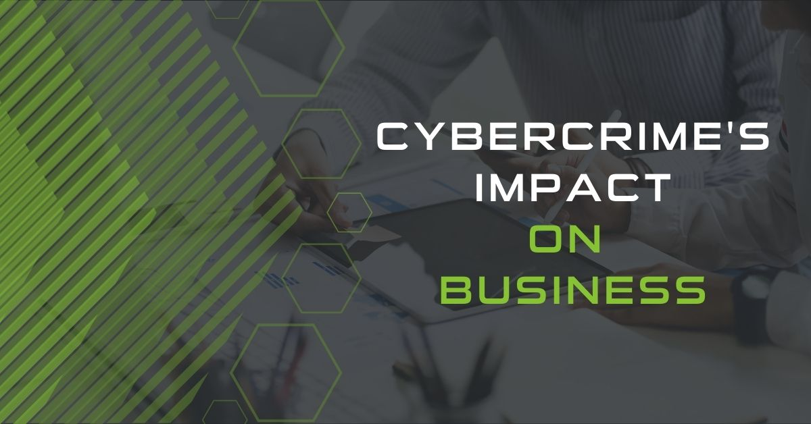

Cyber crime is not just a threat to individuals and organizations. It has enormous effects on entire economies around the world. The financial damage caused by online crimes runs into the trillions of dollars globally every year, making it one of the most costly types of criminal activity in human history. From stolen funds and lost business to expensive recovery efforts and increased security spending, the economic effects of cyber crime are felt by governments, businesses, and ordinary citizens alike. Understanding the economic impact of cyber crime helps us see just how serious and far-reaching this problem truly is.
A Trillion-Dollar Global Problem
The scale of cyber crime's economic impact is almost hard to believe. Cyber crime is estimated to cost the world economy trillions of dollars every year, and that number keeps growing as more of our lives move online. This figure includes direct financial losses from fraud and theft, the cost of investigating and responding to attacks, lost productivity during system downtime, and long-term damage to businesses and investor confidence. Some experts have compared cyber crime to one of the world's largest illegal industries. The global nature of cyber crime makes it especially hard to fight, since attacks can cross borders easily while law enforcement efforts are limited by national boundaries. The huge scale of these losses shows why cyber crime must be treated as a major economic and national security issue, not just a technical problem.
How Cyber Crime Affects Businesses Large and Small
Businesses of all sizes carry a large part of cyber crime's economic burden. Large companies may lose millions in a single data breach, while small businesses often suffer more because they have fewer resources to absorb the financial shock. When a business is hacked, the direct costs include stolen funds, ransom payments, and system repairs. But the indirect costs, such as lost customers, damaged reputation, and reduced employee productivity, can be even greater. Online businesses are especially at risk because they handle large volumes of financial transactions and customer data that attract criminals. For startups and small businesses in the Philippines, a successful cyber attack can mean the difference between staying open and shutting down. The economic damage does not stop at the attacked company either. Suppliers, partners, and customers connected to that business can all be affected, creating a ripple effect throughout entire supply chains.

The High Cost of Recovery
One of the most significant but often overlooked economic effects of cyber crime is the enormous cost of recovery after an attack. Organizations must invest a lot of money in investigating the breach, repairing or replacing damaged systems, notifying affected customers, and strengthening security measures to prevent future attacks. Hiring specialized cybersecurity experts and legal advisers adds further expense, along with the ongoing public relations work needed to manage the damage to the organization's image. In cases of ransomware attacks, organizations face the difficult choice of either paying the ransom, which can cost millions of pesos, or spending even more to rebuild their systems from scratch. The recovery process can take months or years, during which the organization operates at reduced capacity. All of these costs represent money that could have been used for business growth, employee salaries, or public services, making cyber crime not just a direct financial drain but also a drag on overall development.
The Economic Impact in the Philippines
The Philippines is not immune to the economic consequences of cyber crime. As the country's digital economy has grown quickly in recent years, so too have the financial losses from online criminal activity. Online scams, e-commerce fraud, and social media-based investment schemes have caused Filipino consumers and businesses to lose billions of pesos every year. The rise of remote work and online businesses after the pandemic expanded the number of targets even further, giving cyber criminals more opportunities to cause harm. The Bangko Sentral ng Pilipinas (BSP) and the National Privacy Commission (NPC) have both warned about the growing threat of online financial fraud and data breaches affecting Philippine institutions. Beyond direct financial losses, cyber crime also discourages businesses from investing in the country's digital economy, since companies may hesitate to enter a market where cybersecurity risks are seen as high. Addressing cyber crime is therefore not just a matter of safety but an economic need for the Philippines' continued growth and development.
Rising Cybersecurity Spending as a Response
In response to the growing economic threat of cyber crime, organizations and governments worldwide have greatly increased their spending on cybersecurity. Companies now set aside large portions of their budgets for security software, hardware, training, and specialized staff to defend against attacks. While this spending is necessary, it also reflects the enormous economic burden that cyber crime places on the productive sector of the economy. Money spent on defense is money that cannot be spent on growth or social services. The cybersecurity industry itself has become one of the fastest-growing economic sectors in the world, creating demand for skilled professionals and new technologies. In the Philippines, both the government and private sector have been increasing their cybersecurity budgets in recognition of the growing threat. Despite this increased investment, cyber criminals continue to develop new methods, ensuring that the costly race between attackers and defenders remains ongoing.
Conclusion
The economic effects of cyber crime are enormous, affecting individuals, businesses, governments, and entire economies. The trillions of dollars lost globally every year represent not just stolen funds but lost opportunities for growth, development, and public welfare. For the Philippines, addressing the economic impact of cyber crime requires a combined effort from government, the private sector, and individual citizens to strengthen security, enforce existing laws, and invest in digital literacy. Every peso lost to a cyber scam or attack is a peso taken away from families, businesses, and communities that need it. By understanding the full economic cost of cyber crime, we can better appreciate why preventing it is so important, not just for our personal security, but for the health and prosperity of our entire society.